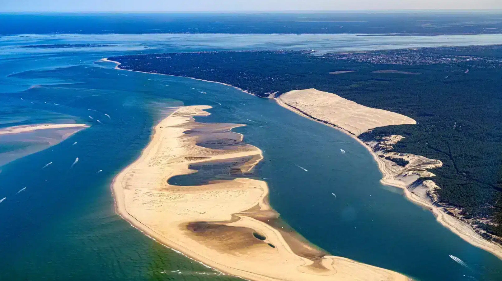

Dune du Pilat
La plus haute dune d’Europe, avec une vue spectaculaire sur l’océan, la forêt et le Bassin d’Arcachon. Une sortie incontournable si vous souhaitez découvrir l’un des sites majeurs du Sud-Ouest.
Astuce : à privilégier le matin ou en fin de journée pour éviter les fortes chaleurs et profiter des plus belles lumières.
📍 Voir sur la carte